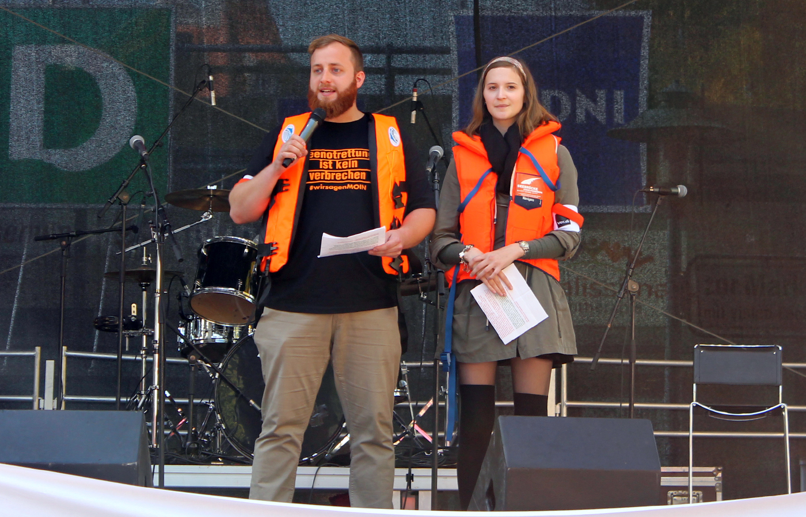
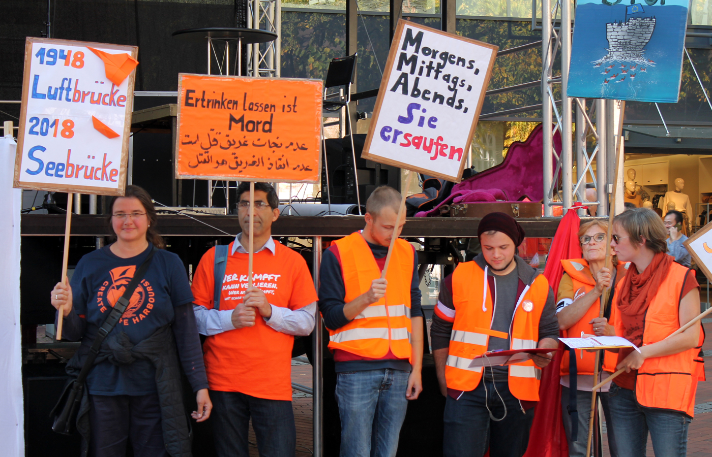
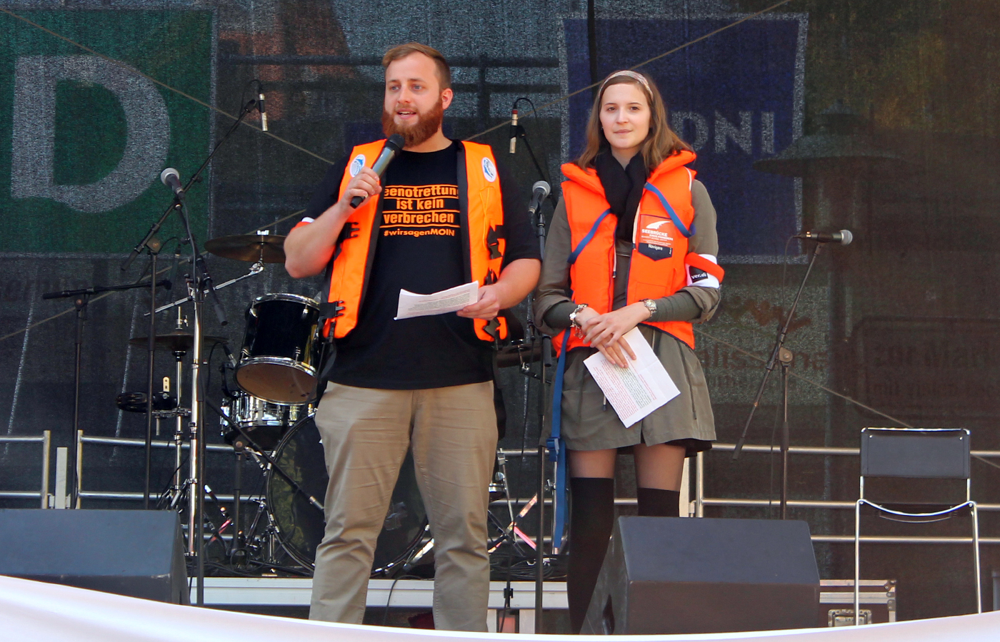
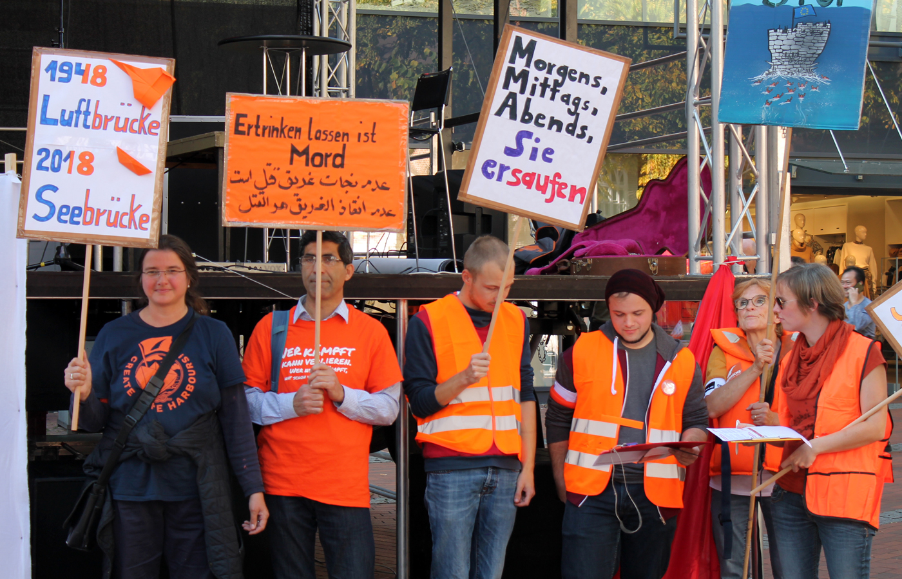

What is the alliance "Seebrücke?
The alliance "Seebrücke" - an association of several refugees - called for demonstrations
in German cities in July 2018. Demonstrators wore some orange lifejackets and lifebuoys to
raise awareness of the rescue operation and to demonstrate for the Sea Rescue, as well as safe
escape routes and a humane refugee policy. The cause of the demonstrations were the events
surrounding the rescue "Lifeline". The rescue ship received in june with over 200 rescued
people on board no landing permit in the Mediterranean. Among other things, Malta refused
the rescue ships "Lifeline" and "Sea-Watch 3" the exit from the port. In addition, the captain
is threatened with a procedure.
read
more
You can find us on facebook
too.
Please sign our petition here.
|
 





|
n November, we will use lifejackets, transpis and paper boats to dive into our circle Pinneberg in
Orange,
the color of the sea rescue! In four cities we are planning actions and flash mobs:
- on 03.11 in the city center of Pinneberg
- on 10.11 in Wedel at the harbor
- on 17.11 in Schenefeld
- jon 24.11 in Elmshorn
|